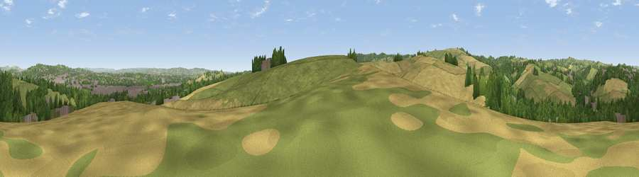

Viewpoint near Ide
#18361 in England · top 33% of its area beats it · near IdeWhere it is
The exact computed spot (SX 90275 90025). Click the marker for map links.
The view, rendered

A 360° render of this exact spot computed from the terrain model, tree cover and land cover — summer colours, afternoon light, calibrated against photographs of famous viewpoints. Real trees, hedges and buildings will differ in detail.
The panorama
Grey silhouette: terrain skyline in each direction (720 bearings, Earth curvature and refraction included). Dashed green: skyline with trees (+15 m) and buildings (+8 m) as obstacles. Blue strip: how far the ground is visible on each bearing.
Where the view opens
Wedge length = distance to the farthest visible ground on that bearing (vegetation-aware). Rings at 10, 25 and 50 km.
What fills the view
43% grassland · 24% woodland · 24% cropland · 9% built-up
Angular shares of the visible panorama (visual magnitude), not map area. Landscape diversity 0.56 (0–1 Shannon).
Key numbers
More beautiful places nearby
The staircase of upgrades: each row has a higher view potential than everything closer. Driving times are estimates from straight-line distance, calibrated against real road routing — check an actual route before setting out.
| Place | Direction | Drive | Score |
|---|---|---|---|
| Viewpoint near Longdown | WSW · 3 km | ~7 min | 78.2 |
| Viewpoint near Doddiscombsleigh | SW · 5 km | ~11 min | 78.4 |
| Viewpoint near Whitestone | NW · 6 km | ~13 min | 79.8 |
| Viewpoint near Kenn | S · 6 km | ~13 min | 80.0 |
| Viewpoint near Kenton | SSE · 9 km | ~18 min | 80.7 |
| Viewpoint near Kenton | SSE · 10 km | ~19 min | 82.9 |
| Viewpoint near Holcombe | SSE · 15 km | ~27 min | 83.3 |
| Viewpoint near Shaldon | S · 19 km | ~33 min | 83.8 |
50.69948, -3.55505 · source: screening · position refined by local search. Computed location — check access rights before visiting.